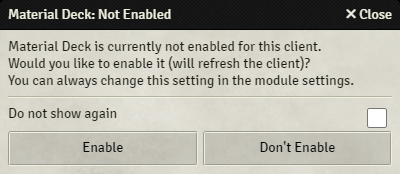
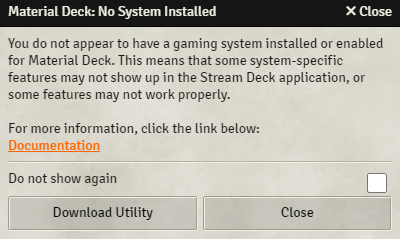
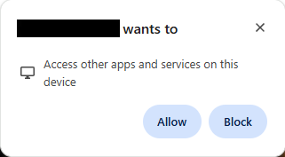
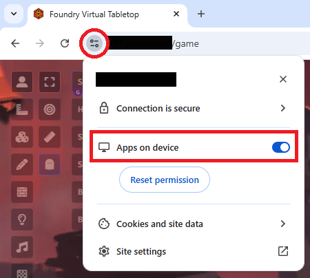

Installation
Before you try installing everything, please check the requirements.
This guide assumes that you have a Foundry VTT server running.
You will need to:
- Link your Patreon account to your Foundry account
- Install and enable the Material Deck module
- (Optionally) install a gaming system module
- Install the Stream Deck application
- Install the Stream Deck plugin
- Make sure the browser is allowed to access the plugin
- Test if everything works
- (Optionally) install a Stream Deck profile
Chrome, Brave, Adblockers and Script Blockers
Chrome, Brave and other browsers have settings that may prevent a communication between Foundry and the Stream Deck plugin.
Similarly, browser plugins/extensions can block the connection.
See here for more info.
Linking a Patreon Account
Material Deck is a premium module that requires a subscription to the Material Foundry Patreon at the 'Material Apprentice' tier or higher.
As a patron you can gain access to the module by linking your Patreon account to your Foundry account:
- Log in on the Foundry VTT website
- Edit your profile here
- Link your Patreon account at the bottom of the page if you haven't already
- Verify that Material Deck shows up under your subscriptions. If it doesn't appear as expected under the "Subscribed Content" page of your user profile, you may need to Refresh your Patreon link
Module

You will need to install and enable the Material Deck module by following this guide.
When you or any players accesses a Foundry server with Material Deck enabled, while it has not been enabled for the client in the module settings, a popup will appear asking if you want to enable Material Deck for the client.
Any user that wants to use Material Deck should click 'Enable', other users should click 'Don't Enable'.
Tick the 'Do not show again' checkbox to prevent the popup from appearing.
Gaming System Modules

While the core Material Deck module is system agnostic, some features will require the installation of a gaming system module.
If no gaming system module is installed and enabled, a popup will appear notifying you of this every time you access the Foundry server (as a GM).
You can press the 'Download Utility' button to open the Download Utility or the 'Close' button to close the popup.
Tick the 'Do not show again' checkbox to prevent the popup from appearing.
Stream Deck Application
For you computer to communicate with your Stream Deck, you will need to install either the official Stream Deck application or OpenDeck.
The official Stream Deck application only works on Windows and MacOS, and only with Elgato's devices. Linux users, or users of non-Elgato compatible devices will need to use OpenDeck.
OpenDeck
OpenDeck is an open-source alternative to the official Stream Deck application that runs on Windows, MacOS and Linux. While Material Deck is currently fully functional in OpenDeck, you should consider it unofficially supported. This means that there is no guarantee that Material Deck will keep functioning on OpenDeck, and OpenDeck-specific issues might not be solved.
Please note that the default profiles cannot be imported into OpenDeck. This means that you will have to create your own from scratch.
This documentation will assume the use of the official Stream Deck application, it is up to you to figure out how this translates to OpenDeck.
You can get OpenDeck here.
For the Ajazz AKP153 (and similar devices), you will need this plugin.
Stream Deck Plugin
The Stream Deck plugin is what allows the Stream Deck to communicate with Foundry.
- Download the latest plugin file (com.cdeenen.materialdeck.streamDeckPlugin) from here or get it from the Download Utility
- Double-click the file, this should open the Stream Deck software if it's not open yet
- Press 'Install' in the pop-up
If that doesn't work, you can try the following:
- Download the source code from here
- Extract the file (using, for example, WinRAR)
- Copy the
com.cdeenen.materialdeck.sdPluginfolder (in the 'Plugin' folder) to:- Windows:
%appdata%\Elgato\StreamDeck\Plugins\ - MacOS:
~/Library/Application Support/com.elgato.StreamDeck/Plugins/
- Windows:
- Restart the Stream Deck application.
Allowing Browser Access to the Plugin
Only for secured Foundry servers (servers that use https instead of http).

By default, some browsers may prevent connections between a secured website and local apps and services (which the Stream Deck plugin is).
You might see a pop-up appear when you first access your Foundry server, which asks you to allow this access. If you see this popup, select Allow.

If you do not see that pop-up, click the icon to the left of the address bar and make sure Apps on device is enabled.
On older versions of Brave you have to disable the shields for your Foundry server: 1. Press the lion icon to the right of the address bar 2. Set shields to 'down'
Browser Plugins/Extensions
Some browser plugins/extensions such as ad-blockers and script blockers may prevent the connection between Foundry and the Stream Deck. If you run into connection issues, try disabling the extension or whitelist your Foundry server.
Testing If Everything Works
You can now test if a connection can be established between the Stream Deck and Foundry:
- Make sure the Stream Deck is connected to your computer and you are running the Stream Deck app
- Start a world in Foundry and access it (or refresh it)
- A notification should appear stating
Material Deck: Connected to Stream Deck, which means the connection is established - In the Stream Deck app, drag a 'Token' action to one of the buttons (see here if you don't know how to do that)
- Select a token in Foundry, its icon and name should appear on the Stream Deck
Stream Deck Profiles
Stream Deck profiles are essentially collections of button actions that you can easily switch between.
You can create your own or download one of the pre-made profiles.
See here for more info on profiles.